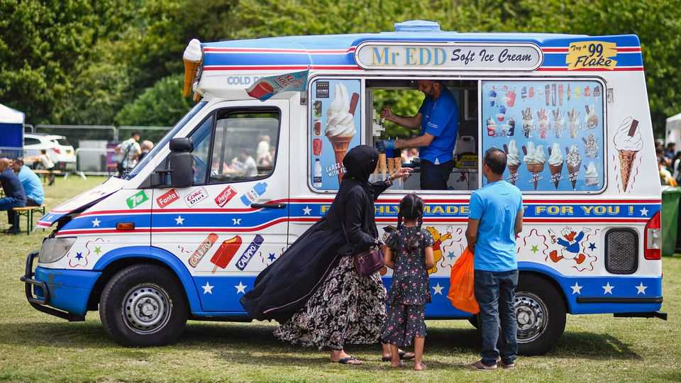

One British Muslim group is faring better than it seems to be
The younger generation is triumphant

Sep 10th 2026
How well integrated are British Muslims, in a social and economic sense? Consider an ethnic group that is more than nine-tenths Muslim: the roughly 650,000 Bangladeshis of England and Wales.
In 1987 the future Charles III visited Spitalfields in east London, where many Bangladeshis had settled since 1945. He was horrified. “They are working and living in conditions almost as bad as those on the Indian subcontinent,” he said. “It really is not acceptable.” The Commission for Racial Equality, a public body, later pointed out that Bangladeshis had poor health and a desperately low employment rate.
Their attainment in school was “very low indeed”, said a report for the government in 1985. Many children had migrated from rural Bangladesh, with little education. They spoke poor English. Some teachers expected little of them. Their parents sent them to local schools, because they feared attacks by white racists.
Many Bangladeshis remain poor. One in two have incomes in the bottom quintile nationally, after housing costs. The median household has wealth of less than £100,000 ($135,000); the average for all ethnic groups is about £300,000. Bangladeshis are still concentrated in east London. Yet if they appear stuck, that is an illusion.
Today, young Bangladeshis triumph in school. In the early 2010s they started doing as well as white Britons in gcse exams, normally taken at 16. They now do far better. Fully 67% of Bangladeshis who took gcses in 2021 were enrolled in university by age 19, compared with 38% of white Britons. Growing numbers go to competitive universities and study subjects that lead to good jobs. Over the past decade the number studying engineering and technology has doubled, while the number studying medicine and dentistry has tripled.
A big reason why Bangladeshi households were and are poor is that many women are economically inactive. But that too is changing. The 2021 census showed that 68% of British-born Bangladeshis aged 25 to 34 were employed, compared with 79% of white British women. The overall Bangladeshi rate is lowered by immigrant women, just 32% of whom in that age group were employed.
Bangladeshis are less likely to have good jobs than might be expected, given their educational prowess. Yet the British-born do not fare too badly. At the last census, 14% of 25- to 34-year-olds held professional or managerial jobs, almost identical to the rate among white Britons. Since 2010-11 the number of Bangladeshi teachers in English schools has almost tripled.
Being concentrated in Britain’s most dynamic city helps. Britain’s Pakistanis, who are more likely to live in post-industrial towns in northern England, are faring less well at school. But they too have overtaken white Britons. Anisa Butt of the National Institute of Economic and Social Research, a think-tank, says that educated Bangladeshi and Pakistani women rule the marriage market: “The more qualified you are, the more desirable you are.”
When a group of people migrates in a rush, then more or less stops coming, its progress is likely to be obvious. The Asians who were cruelly kicked out of east Africa in the 1970s are rightly celebrated for their economic success in Britain. The many eastern Europeans who arrived in the 2000s deserve some applause too. Poles, the largest group, mostly started out doing working-class jobs but now earn slightly more than native-born Britons.
Bangladeshis are a mix of the newly arrived and the long-established. Almost half were born outside Britain—which is also true of the entire Muslim population of England and Wales. Because the Bangladeshi population keeps being diluted by immigrants, its economic integration can be hard to see. But it is happening. ■